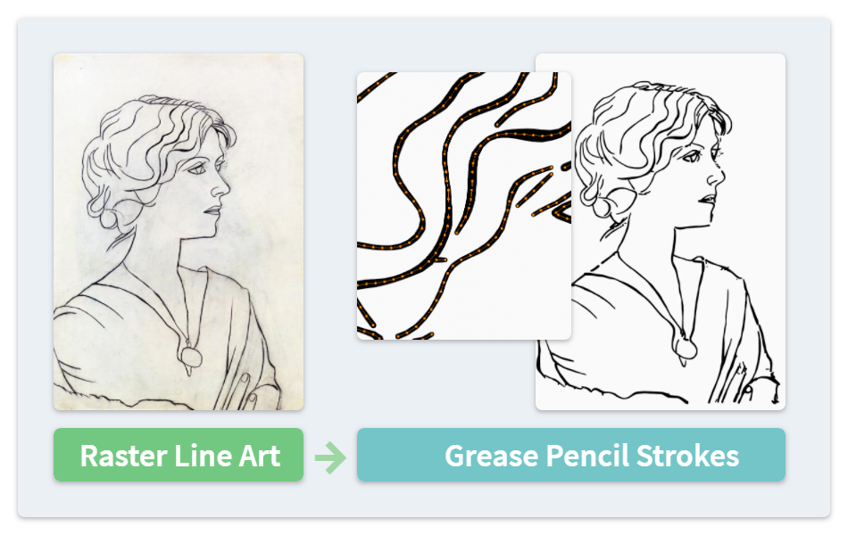
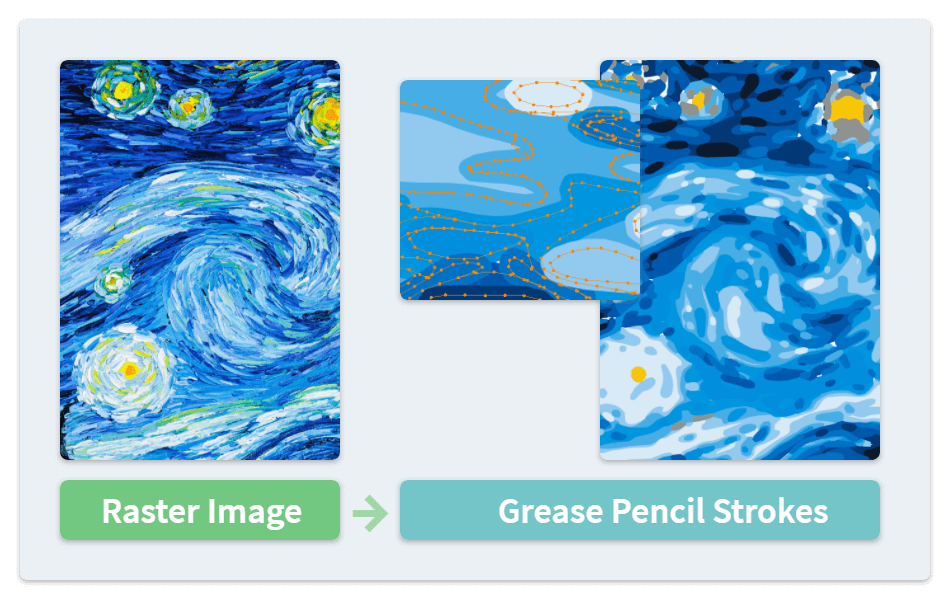

Vectorizing Images #
The Trace Image to Grease Pencil tool of Blender is limited to black and white input images. NijiGPen provides with operators vectorizing another two types of raster images.
These operators take either a single image or an image sequence as the input, and generate new strokes in the current Grease Pencil layer. The direction of the generated strokes is parallel to the current 2D working plane.

Sketches: Extracting the Line Art #
The Line Art button is an operator to convert an image to line-only strokes. It is recommended to select a material without fills enabled.
Compared with most SVG-based editing software, an advantage of extracting the line art in Blender is the ability to preserve the thickness and color of the strokes, stored as point attributes.
Median Filter #
Setting a non-zero value in the Median Filter Radius option will enable the median filter.
- The filter should be used when the input image has heavy noise or grain.
- However, a large radius may also lower the processing speed and ignore some details from the image.

Color Images: Quantization #
The Flat Color button is an operator that reduces the number of distinct colors used in an image. Then, each color of the image is traced separately to generate Grease Pencil strokes.
You can choose to either generate a new material for each color, or use a single material with multiple vertex fill colors.
This operator aims at color paintings in the flat style, rather than images with rich and gradient colors, e.g., real-world photos.
Increasing the number of colors in the import option may lead to better results for the latter case, but also causes a much longer processing time, and the result may still be far from ideal.
Generate Line Colors #
This method mainly focuses on the fill color of generated strokes, while there is also an option to determine whether the same color should be assigned to the line points.
The thickness and strength of the line are determined by the current brush.
Generate a Palette #
Along with the stroke generation, a palette can be generated which contains the colors extracted from the image. On the other hand, a palette can also be used as the input of the Color Source option, specifying which colors should be extracted. This may have the following use cases:
- To import multiple images and guarantee their color sets are consistent.
- To perform the color transfer, i.e., applying the color style of one image to another image.
Min Stroke Area #
This option determines whether to ignore a shape by its area. Shapes with 0 or a very small area may lead to problems when performing polygon or mesh generation operations. This option can filter them out.
(The example images used in this page are Portrait of Olga by Pablo Picasso in 1920, and The Starry Night by Vincent van Gogh in 1889.)